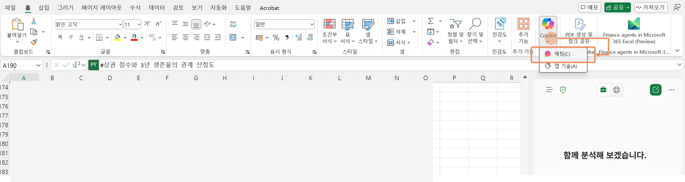

이번 퀘스트에서는 Copilot Chat을 활용하여 데이터에서 얻은 인사이트를 바탕으로 시장, 상권, 타겟 고객을 구체화합니다.

- 이제 Copilot Chat으로도 데이터 분석을 진행해보겠습니다.
- Excel 홈 메뉴의 Copilot 버튼을 클릭, 또는 아래 화살표에서 채팅을 선택하여 Copilot Chat으로 이동하십시오.  또는 https://m365.cloud.microsoft/chat/를 클릭하여 Copilot Chat으로 이동하여 시작하여도 됩니다.
-
문서를 기반으로 답변을 요청할 때는 Copilot Chat 프롬프트 입력창에서 파일 업로드를 선택하여 파일을 지정할 수 있습니다. 2에서 다운받은 실습파일을 선택합니다.

- 아래의 샘플 프롬프트를 이어서 입력합니다. [대괄호]로 싸여 있는 부분을 취향에 따라 수정하십시오. (대괄호는 지우시고요)
- [대괄호] 내용을 창의적으로 변경해보면서 마음에 들 때까지 다시 생성해 봅니다.
🚩 데이터 분석하기
통계 데이터를 시각화 하고, 대화로 흐름을 이어가며 분석을 수행합니다.
[샘플 프롬프트]
서울의 각 구 [유동인구]와 [가게수] 간의 관계를 시각화해줘. 이제 모든 시각화 요청은 plotly를 이용해서 그래프를 그려줘
[중구] 개업/폐업 추이를 시각화해줘
유동인구수와 생존율에 상관관계가 있어?
각 구의 신생가게수와 3년생존률을 히트맵으로 시각화해줘
프랜차이즈 비중과 전체 3년 생존율의 산점도 + 회귀선 + 상관계수를 그려 프랜차이즈 비중이 높을수록 생존율이 어떠한 경향을 보이는지 알려줘
[20대]와 [40대]의 소비 스타일 선호도 차이를 막대 그래프로 시각화해줘
[20대]를 타겟으로 식당을 오픈하려고 해. [유동인구]와 [3년 생존율]을 참고하여 어떤 지역에서 가게를 준비하면 좋을지 제안해줘. 2개의 지역을 제안하고, 각각의 장단점을 비교해서 표 형태로 보여줘.